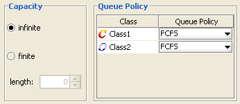

How to Define the Queue Strategy
_________________
The Queue section is part of the Station Parameters definition page; it is present only for server and fork stations.
The Queue section allows the specification of the queueing capacity (whether finite or infinite) and policy. Different classes may have different policies associated with them.

Capacity: a station can accept any customer and let them wait in quue, in which case its capacity is considered infinite, or it can only accept a finite number of customers. In this case its capactiy is finite, with a length to be specified in the form
Queue policy: it is the algorithm used to decide which customer to serve next. A variety of factors can contribute to the order in which customers are served, such as arrival order, priorities associated with a class, the amount of service already provided to customers, etc.
In JSIM queueing disciplines based on arrival order and priority are the only available, namely:
- FCFS: under the First Come First Served queueing discipline, customers are served in the order in which they arrive at the station. If the model is exported to MVA, the following constraint is enforced in the exported model. Since all customer classes must have the same average service time at a FCFS station, the total number of visits to the station (Vc,k) is adjusted in order to comply with the constraint and at the same time allow for distinct service demands (Dc,k).
- FCFS (Priority): under this policy, customers are ordered according to their arrival time but customers with higher priority jump ahead of customers with lower priority (conventionally a small priority number = low priority). Customers with the same priority are served FCFS.
- LCFS: under the Last Come First Served queueing discipline, an arriving job jumps ahead of the queue and will be served first, unless other jobs arrive before the one currently in service finishes. The LCFS discipline implemented in JSIM is not the preemptive-resume type.
- LCFS (Priority): under this policy, the next customer to be served is one with the highest priority (conventionally a small priority number = low priority), so an arriving customer can only jump ahead of the queue of the other jobs with the equal or smaller priority. Customers with the same priority are served LCFS.